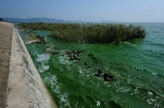

海洋汙染
石油污染
石油污染是一種嚴重的海洋污染。來源於經河流、向海洋注入的含油廢水，海上油船漏油、排放和油船事故等；海底油田開採溢漏；逸入大氣中的石油烴的沉降等。進入海洋的石油烴年約600萬噸。 ...(繼續閱讀)

有機物污染
這類污染物不會在生物體內積累。適量的有機物、營養鹽，有利海洋生物生長，過量造成水體溶解氧減少，浮游植物大量繁殖。潮流使河口有機物稀釋擴散，多被細菌分解為二氧化碳、水。 ...(繼續閱讀)